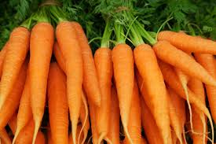
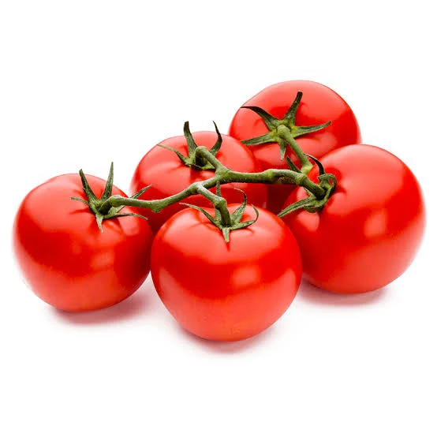
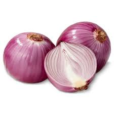

Featured Products

Carrots
KES 80 / kg

Bananas
KES 120 / bunch

Tomatoes
KES 100 / kg

Onions
KES 90 / kg
Healthy. Affordable. Locally sourced.
FarmFresh Market is an online marketplace dedicated to connecting Kenyan farmers directly with customers. Our platform offers fresh, locally sourced farm produce including vegetables and fruits, at affordable prices. We ensure ethical handling of user data in line with the Kenya Data Protection Act (2019) and ODPC guidelines, making your shopping experience safe and convenient.
KES 80 / kg
KES 120 / bunch
KES 100 / kg
KES 90 / kg